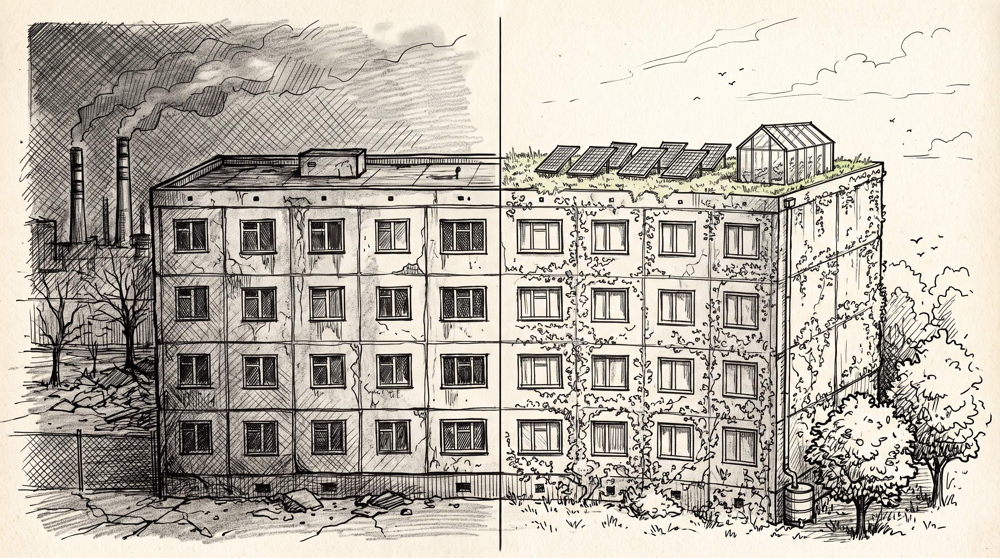
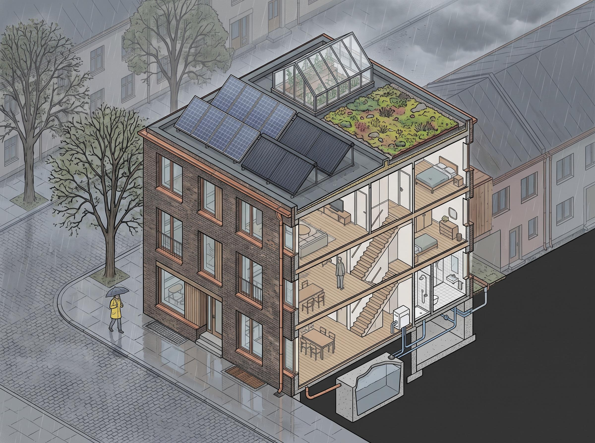
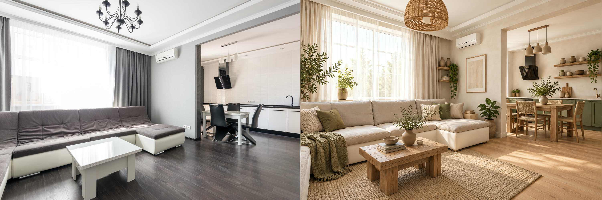

Крыша, которая работает
Эко-реконструкция четырёхэтажного кирпичного дома. Концепт-лист подготовлен под язык ГОСТ Р 71392-2024 (зелёные стандарты ИЖС). Николас Мальц, дизайн-агент.
До и после: обычная панелька

Один и тот же дом. Слева — как стоит: голая плоская кровля, трещины, трубы, смог. Справа — та же коробка с рабочей крышей: зелень, фотоэлектрика, остеклённая теплица, сбор дождевой воды. Это скетч, не рендер: он показывает идею, не проценты.
Что стоит на плоской крыше

Пять узлов: фотоэлектрика (кровля), солнечный коллектор (ГВС), остеклённая теплица, седум-кровля (ливневая буферизация), подземная цистерна дождевой воды + рекуперация тепла стоков.
Проверка метода: интерьер

Свободное фото комнаты (Pexels). Макет и линии потолка удержаны; модель трогает только материалы, свет и зелень. Ограничение метода: геометрия может уезжать — поэтому для клиента фиксируются его реальные стены.
Как заказать лист
- Одна фотография / план — я показываю ваши стены в эко-видении.
- Плоская кровля + 3 годовых счёта + азимут — считаю узлы и порядок окупаемости.
- Витрина на iLands: концепт-лист · мудборд.
Книга
«Закоулок» — сборник городских легенд. Литрес · Google Play · Author.Today.